# Admin # - - - - - - - - - - - - - - - - - - - - - - - - - - - - - - - - - - - -
admin = T
if(admin) {
want = c("tidyverse", "magrittr", "rio",
"here", "haven", "labelled",
"MASS",
"ggridges", "ggthemes")
have = want %in% rownames(installed.packages())
if ( any(!have) ) { install.packages( want[!have] ) }
# load packages
junk <- lapply(want, library, character.only = TRUE)
rm(have, want, junk)
options(scipen = 99)
rm(list = ls())
}
# Data # - - - - - - - - - - - - - - - - - - - - - - - - - - - - - - - - - - - -
ess_ita_gianlu <- read_dta(here('data','ess', 'ESSItaly_3Round_v2.dta'))
# Wrangle for reg
reg_data <-
ess_ita_gianlu %>%
mutate(
across(
c('gndr', 'job', 'edu3', 'income_feel', 'domicil', 'cdx_vc', 'cdx_vc_abs', 'party_close_cdx'),
~as.factor(.)
),
essround = as.character(essround),
agea_sq = agea^2,
lrscale_sq = lrscale^2
) %>%
mutate(
.by = 'essround',
across(
c('immi_add', 'immi_pca', 'lrscale','lrscale_sq', 'trstep',
'agea', 'agea_sq', 'rlgdgr'),
~(.-mean(.,na.rm=T))/(2*sd(.,na.rm=T))
)
)
# Fit foo # - - - - - - - - - - - - - - - - - - - - - - - - - - - - - - - - - -
glm_itastory <-
function(data = reg_data, frml, weight = 'anweight', essr) {
vrbls <- str_split(frml, pattern = '[~]|[+]|[*]')[[1]] %>% trimws %>% unique
vrbls <- c(vrbls, 'anweight', 'dweight', 'essround')
fit_data <- data %>% dplyr::select(all_of(vrbls)) %>% na.omit
if (essr %in% c('1', '6', '9')) {
fit_data %<>% filter(essround == essr)
} else if (essr=='all') {
frml <- paste0(frml, ' + essround')
}
if (weight %in% c('anweight')) {
fit <-
glm(
formula = frml,
data = fit_data,
family = binomial(link = 'logit'),
weights = anweight
)
} else if (weight %in% c('dweight')) {
fit <-
glm(
formula = frml,
data = fit_data,
family = binomial(link = 'logit'),
weights = dweight
)
} else {
fit <-
glm(
formula = frml,
data = fit_data,
family = binomial(link = 'logit')
)
}
return(
list(
'model' = fit,
'data' = fit_data,
'formula' = frml
)
)
}
# Pred prob sim foo # - - - - - - - - - - - - - - - - - - - - - - - - - - - - -
pp_sim_fun <-
function(res, df, frml, dv, vrbl, sqnc) {
mu <- coef(res)
varcov <- vcov(res)
nsim <- 1000L
S <- MASS::mvrnorm(nsim, mu, varcov)
modelmatrix.frml <- as.formula(gsub(dv, '', as.character(frml)))
X <- model.matrix(modelmatrix.frml, data=df)
sel1 <- which(colnames(X) == vrbl)
scenario <- seq(0, 1, length.out = sqnc)
cases <- array(NA, dim = c(dim(X), length(scenario)))
cases[, ,] <- X
for (i in 1:length(scenario)) {
cases[, sel1, i] <- scenario[i]
}
val <- matrix(NA,
nrow = nsim,
ncol = length(scenario))
for (i in 1:length(scenario)) {
val[, i] <-
apply(S, 1, function(s)
mean(1 / (1 + exp(-cases[, , i] %*% s))))
}
df_pp <- data.frame(t(apply(val, 2, quantile, c(0.975, 0.025))))
df_pp$mean <- apply(val, 2, mean)
df_pp$val <- scenario
names(df_pp)[1:4] <- c("conf.high", "conf.low", "predicted", "x")
return(df_pp)
}
# AME sim foo # - - - - - - - - - - - - - - - - - - - - - - - - - - - - - - - -
ame_fun <-
function(res, df, frml, dv, vrbl, step) {
mu <- coef(res)
varcov <- vcov(res)
nsim <- 1000L
S <- MASS::mvrnorm(nsim, mu, varcov)
modelmatrix.frml <- as.formula(gsub(dv, '', as.character(frml)))
X1 <- X0 <- model.matrix(modelmatrix.frml, data=df)
sel1 <- which(colnames(X1) == vrbl)
X1[,sel1] <- X0[,sel1]-step
eta0 <- X0 %*% t(S)
eta1 <- X1 %*% t(S)
ev0 <- 1/(1+exp(-eta0))
ev1 <- 1/(1+exp(-eta1))
me <- ev0-ev1
ame <- apply(me, FUN=mean, MARGIN = 2)
return(ame)
}
# Fit models # - - - - - - - - - - - - - - - - - - - - - - - - - - - - - - - - -
frmls <-
list(
'cdx_vc ~ immi_pca + trstep + lrscale + rlgdgr + income_feel + job + edu3 + agea + agea_sq + domicil + gndr',
'cdx_vc_abs ~ immi_pca + trstep + lrscale + rlgdgr + income_feel + job + edu3 + agea + agea_sq + domicil + gndr',
'cdx_vc ~ immi_pca + trstep + party_close_cdx + lrscale + rlgdgr + income_feel + job + edu3 + agea + agea_sq + domicil + gndr',
'cdx_vc_abs ~ immi_pca + trstep + party_close_cdx + lrscale + rlgdgr + income_feel + job + edu3 + agea + agea_sq + domicil + gndr',
'cdx_vc ~ immi_pca + trstep + party_close_cdx + lrscale + rlgdgr + income_feel + job + edu3 + agea + agea_sq + domicil + gndr + immi_pca*party_close_cdx',
'cdx_vc_abs ~ immi_pca + trstep + party_close_cdx + lrscale + rlgdgr + income_feel + job + edu3 + agea + agea_sq + domicil + gndr + immi_pca*party_close_cdx',
'cdx_vc ~ immi_pca + trstep + party_close_cdx + lrscale + rlgdgr + income_feel + job + edu3 + agea + agea_sq + domicil + gndr + lrscale*party_close_cdx',
'cdx_vc_abs ~ immi_pca + trstep + party_close_cdx + lrscale + rlgdgr + income_feel + job + edu3 + agea + agea_sq + domicil + gndr + lrscale*party_close_cdx'
)
rnds <- c('1', '6', '9')
fit_lst <-
lapply(
frmls,
function(f) {
lapply(
rnds,
function(r) {
glm_itastory(
frml = f,
essr = r
)
}
)
}
)
# Get PPs and AMEs for base models # - - - - - - - - - - - - - - - - - - - - - -
immi_pp_df <-
rbind(
pp_sim_fun(
res = fit_lst[[1]][[1]]$model,
df = fit_lst[[1]][[1]]$data,
frml = fit_lst[[1]][[1]]$formula,
dv = 'cdx_vc',
vrbl = 'immi_pca',
sqnc = 20
) %>% mutate(model='ESS round 1'),
pp_sim_fun(
res = fit_lst[[1]][[2]]$model,
df = fit_lst[[1]][[2]]$data,
frml = fit_lst[[1]][[2]]$formula,
dv = 'cdx_vc',
vrbl = 'immi_pca',
sqnc = 20
) %>% mutate(model='ESS round 6'),
pp_sim_fun(
res = fit_lst[[1]][[3]]$model,
df = fit_lst[[1]][[3]]$data,
frml = fit_lst[[1]][[3]]$formula,
dv = 'cdx_vc',
vrbl = 'immi_pca',
sqnc = 20
) %>% mutate(model='ESS round 9')
)
immi_ame_df <-
rbind(
tibble(
ame = ame_fun(
res = fit_lst[[1]][[1]]$model,
df = fit_lst[[1]][[1]]$data,
frml = fit_lst[[1]][[1]]$formula,
dv = 'cdx_vc',
vrbl = 'immi_pca',
step = 1
),
model = 'EES round 1'
),
tibble(
ame = ame_fun(
res = fit_lst[[1]][[2]]$model,
df = fit_lst[[1]][[2]]$data,
frml = fit_lst[[1]][[2]]$formula,
dv = 'cdx_vc',
vrbl = 'immi_pca',
step = 1
),
model = 'EES round 6'
),
tibble(
ame = ame_fun(
res = fit_lst[[1]][[3]]$model,
df = fit_lst[[1]][[3]]$data,
frml = fit_lst[[1]][[3]]$formula,
dv = 'cdx_vc',
vrbl = 'immi_pca',
step = 1
),
model = 'EES round 9'
)
)
# Get PPs and AMEs for party closeness models # - - - - - - - - - - - - - - - -
immi_pid_pp_df <-
rbind(
pp_sim_fun(
res = fit_lst[[3]][[1]]$model,
df = fit_lst[[3]][[1]]$data,
frml = fit_lst[[3]][[1]]$formula,
dv = 'cdx_vc',
vrbl = 'immi_pca',
sqnc = 20
) %>% mutate(model='ESS round 1'),
pp_sim_fun(
res = fit_lst[[3]][[2]]$model,
df = fit_lst[[3]][[2]]$data,
frml = fit_lst[[3]][[2]]$formula,
dv = 'cdx_vc',
vrbl = 'immi_pca',
sqnc = 20
) %>% mutate(model='ESS round 6'),
pp_sim_fun(
res = fit_lst[[3]][[3]]$model,
df = fit_lst[[3]][[3]]$data,
frml = fit_lst[[3]][[3]]$formula,
dv = 'cdx_vc',
vrbl = 'immi_pca',
sqnc = 20
) %>% mutate(model='ESS round 9')
)
immi_pid_ame_df <-
rbind(
tibble(
ame = ame_fun(
res = fit_lst[[3]][[1]]$model,
df = fit_lst[[3]][[1]]$data,
frml = fit_lst[[3]][[1]]$formula,
dv = 'cdx_vc',
vrbl = 'immi_pca',
step = 1
),
model = 'EES round 1'
),
tibble(
ame = ame_fun(
res = fit_lst[[3]][[2]]$model,
df = fit_lst[[3]][[2]]$data,
frml = fit_lst[[3]][[2]]$formula,
dv = 'cdx_vc',
vrbl = 'immi_pca',
step = 1
),
model = 'EES round 6'
),
tibble(
ame = ame_fun(
res = fit_lst[[3]][[3]]$model,
df = fit_lst[[3]][[3]]$data,
frml = fit_lst[[3]][[3]]$formula,
dv = 'cdx_vc',
vrbl = 'immi_pca',
step = 1
),
model = 'EES round 9'
)
)
# Immi base ame plot # - - - - - - - - - - - - - - - - - - - - - - - - - - - - -
immi_ame_df %>%
ggplot(aes(x=ame, y=model)) + # , fill=model, colour=model)
geom_vline(xintercept=0, linetype='dashed', alpha=.5) +
ggridges::stat_density_ridges(
alpha = .5,
quantile_lines = T,
quantiles = c(0.025, .5, 0.975),
scale = .9
) +
# scale_color_manual(values = c('orange3', 'dodgerblue3', 'purple4'),
# name = 'ESS round') +
# scale_fill_manual(values = c('orange2', 'dodgerblue2', 'purple3'),
# name = 'ESS round') +
xlab('Attitudes toward immigration AME') +
ylab('Density') +
ggthemes::theme_fivethirtyeight()
# Immi base pp plot # - - - - - - - - - - - - - - - - - - - - - - - - - - - - -
immi_pp_df %>%
ggplot(aes(x=x, y=predicted, ymin=conf.low, ymax=conf.high, group=model, linetype=model)) + # , fill=model, colour=model
geom_line() +
geom_ribbon(alpha=.5) +
# scale_color_manual(values = c('orange3', 'dodgerblue3', 'purple4'),
# name = 'ESS round') +
# scale_fill_manual(values = c('orange2', 'dodgerblue2', 'purple3'),
# name = 'ESS round') +
ggthemes::theme_fivethirtyeight() +
xlab('Attitudes toward immigration') +
ylab('Predicted probability')
# Immi party closeness ame plot # - - - - - - - - - - - - - - - - - - - - - - -
immi_pid_ame_df %>%
ggplot(aes(x=ame, y=model)) + # , fill=model, colour=model)) +
geom_vline(xintercept=0, linetype='dashed', alpha=.5) +
ggridges::stat_density_ridges(
alpha = .5,
quantile_lines = T,
quantiles = c(0.025, .5, 0.975),
scale = .9
) +
# scale_color_manual(values = c('orange3', 'dodgerblue3', 'purple4'),
# name = 'ESS round') +
# scale_fill_manual(values = c('orange2', 'dodgerblue2', 'purple3'),
# name = 'ESS round') +
xlab('Attitudes toward immigration AME') +
ylab('Density') +
ggthemes::theme_fivethirtyeight()
# Immi party closeness pp plot # - - - - - - - - - - - - - - - - - - - - - - - -
immi_pid_pp_df %>%
ggplot(aes(x=x, y=predicted, ymin=conf.low, ymax=conf.high, group=model, linetype=model)) + # fill=model, colour=model)) +
geom_line() +
geom_ribbon(alpha=.5) +
# scale_color_manual(values = c('orange3', 'dodgerblue3', 'purple4'),
# name = 'ESS round') +
# scale_fill_manual(values = c('orange2', 'dodgerblue2', 'purple3'),
# name = 'ESS round') +
ggthemes::theme_fivethirtyeight() +
xlab('Attitudes toward immigration') +
ylab('Predicted probability')
# Immi party closeness interaction pp plot # - - - - - - - - - - - - - - - - - - - - - - - -
rbind(
ggeffects::ggpredict(
fit_lst[[5]][[1]]$model,
c('immi_pca [all]', 'party_close_cdx')
) %>%
as_tibble() %>%
mutate(model = 'Round 1'),
ggeffects::ggpredict(
fit_lst[[5]][[2]]$model,
c('immi_pca [all]', 'party_close_cdx')
) %>%
as_tibble() %>%
mutate(model = 'Round 6'),
ggeffects::ggpredict(
fit_lst[[5]][[3]]$model,
c('immi_pca [all]', 'party_close_cdx')
) %>%
as_tibble() %>%
mutate(model = 'Round 9')
) %>%
mutate(
group = case_when(
group==0 ~ 'No party',
group==1 ~ 'CL party',
group==2 ~ 'CR party'
)
) %>%
ggplot(aes(x=x, y=predicted, fill=group, colour = group, fill = group)) +
geom_line() +
scale_color_manual(values = c('red3', 'dodgerblue3', 'grey20'),
name = 'Party closeness') +
scale_fill_manual(values = c('red2', 'dodgerblue2', 'grey40'),
name = 'Party closeness') +
geom_ribbon(aes(ymin=conf.low, ymax=conf.high), alpha=.5) +
facet_wrap(~model) +
theme_bw() +
theme(legend.position='top') +
xlab('Immigration attitudes') +
ylab('Predicted probability')
lr_pp_df <-
rbind(
pp_sim_fun(
res = fit_lst[[3]][[1]]$model,
df = fit_lst[[3]][[1]]$data,
frml = fit_lst[[3]][[1]]$formula,
dv = 'cdx_vc',
vrbl = 'lrscale',
sqnc = 20
) %>% mutate(model='ESS round 1'),
pp_sim_fun(
res = fit_lst[[3]][[2]]$model,
df = fit_lst[[3]][[2]]$data,
frml = fit_lst[[3]][[2]]$formula,
dv = 'cdx_vc',
vrbl = 'lrscale',
sqnc = 20
) %>% mutate(model='ESS round 6'),
pp_sim_fun(
res = fit_lst[[3]][[3]]$model,
df = fit_lst[[3]][[3]]$data,
frml = fit_lst[[3]][[3]]$formula,
dv = 'cdx_vc',
vrbl = 'lrscale',
sqnc = 20
) %>% mutate(model='ESS round 9')
)
lr_pp_df %>%
ggplot(aes(x=x, y=predicted)) +
geom_vline(xintercept=0, linetype='dotted') +
geom_line() +
geom_ribbon(aes(ymin=conf.low, ymax=conf.high), alpha=.5) +
facet_wrap(~model) +
theme_bw() +
theme(legend.position='top') +
xlab('Immigration attitudes') +
ylab('Predicted probability')
lr_ame_df <-
rbind(
tibble(
ame = ame_fun(
res = fit_lst[[3]][[1]]$model,
df = fit_lst[[3]][[1]]$data,
frml = fit_lst[[3]][[1]]$formula,
dv = 'cdx_vc',
vrbl = 'lrscale',
step = 1
),
model = 'EES round 1'
),
tibble(
ame = ame_fun(
res = fit_lst[[3]][[2]]$model,
df = fit_lst[[3]][[2]]$data,
frml = fit_lst[[3]][[2]]$formula,
dv = 'cdx_vc',
vrbl = 'lrscale',
step = 1
),
model = 'EES round 6'
),
tibble(
ame = ame_fun(
res = fit_lst[[3]][[3]]$model,
df = fit_lst[[3]][[3]]$data,
frml = fit_lst[[3]][[3]]$formula,
dv = 'cdx_vc',
vrbl = 'lrscale',
step = 1
),
model = 'EES round 9'
)
)
lr_ame_df %>%
ggplot(aes(x=ame, y=model)) + # , fill=model, colour=model)) +
ggridges::stat_density_ridges(
alpha = .5,
quantile_lines = T,
quantiles = c(0.025, .5, 0.975),
scale = .9
) +
# scale_color_manual(values = c('orange3', 'dodgerblue3', 'purple4'),
# name = 'ESS round') +
# scale_fill_manual(values = c('orange2', 'dodgerblue2', 'purple3'),
# name = 'ESS round') +
xlab('Left-Right AME') +
ylab('Density') +
ggthemes::theme_fivethirtyeight()
rbind(
ggeffects::ggpredict(
fit_lst[[3]][[1]]$model,
c('party_close_cdx [all]')
) %>%
as_tibble() %>%
mutate(model = 'Round 1'),
ggeffects::ggpredict(
fit_lst[[3]][[2]]$model,
c('party_close_cdx [all]')
) %>%
as_tibble() %>%
mutate(model = 'Round 6'),
ggeffects::ggpredict(
fit_lst[[3]][[3]]$model,
c('party_close_cdx [all]')
) %>%
as_tibble() %>%
mutate(model = 'Round 9')
) %>%
mutate(
x = case_when(
x==0 ~ '0. No party',
x==1 ~ '1. CL party',
x==2 ~ '2. CR party'
)
) %>%
ggplot(aes(x=x, y=predicted)) +
geom_point() +
geom_errorbar(aes(ymin=conf.low, ymax=conf.high), width=.2)+
facet_wrap(~model) +
theme_bw() +
theme(legend.position='top') +
xlab('Party closeness') +
ylab('Predicted probability')
f1 <- glm('cdx_vc ~ immi_pca + trstep + party_close_cdx + lrscale*party_close_cdx + lrscale + rlgdgr + income_feel + job + edu3 + agea + agea_sq + domicil + gndr', family = binomial(), reg_data %>% filter(essround==1)) # + I(lrscale^2)
f2 <- glm('cdx_vc ~ immi_pca + trstep + party_close_cdx + lrscale*party_close_cdx + lrscale + rlgdgr + income_feel + job + edu3 + agea + agea_sq + domicil + gndr', family = binomial(), reg_data %>% filter(essround==6)) # + I(lrscale^2)
f3 <- glm('cdx_vc ~ immi_pca + trstep + party_close_cdx + lrscale*party_close_cdx + lrscale + rlgdgr + income_feel + job + edu3 + agea + agea_sq + domicil + gndr', family = binomial(), reg_data %>% filter(essround==9)) # + I(lrscale^2)
# stargazer::stargazer(
# fit_lst[[7]][[1]]$model,
# fit_lst[[7]][[2]]$model,
# fit_lst[[7]][[3]]$model,
# type = 'text'
# )
rbind(
ggeffects::ggpredict(
fit_lst[[7]][[1]]$model,
c('lrscale [all]', 'party_close_cdx')
) %>%
as_tibble() %>%
mutate(model = 'Round 1'),
ggeffects::ggpredict(
fit_lst[[7]][[2]]$model,
c('lrscale [all]', 'party_close_cdx')
) %>%
as_tibble() %>%
mutate(model = 'Round 6'),
ggeffects::ggpredict(
fit_lst[[7]][[3]]$model,
c('lrscale [all]', 'party_close_cdx')
) %>%
as_tibble() %>%
mutate(model = 'Round 9')
) %>%
mutate(
group = case_when(
group==0 ~ 'No party',
group==1 ~ 'CL party',
group==2 ~ 'CR party'
)
) %>%
ggplot(aes(x=x, y=predicted,ymin=conf.low, ymax=conf.high, fill=group, colour=group)) +
geom_vline(xintercept=0, linetype='dotted') +
geom_line() +
geom_ribbon(alpha=.5) +
facet_wrap(~model) +
theme_bw() +
scale_color_manual(values = c('red3', 'dodgerblue3', 'grey20'),
name = 'Party closeness') +
scale_fill_manual(values = c('red2', 'dodgerblue2', 'grey40'),
name = 'Party closeness') +
theme(legend.position='top') +
xlab('Immigration attitudes') +
ylab('Predicted probability')
# Tab base model CR vote w/o abstention # - - - - - - - - - - - - - - - - - - -
cov_labs <-
c(
'Imm. scale',
'Trust EP',
'LR', 'Religiosity',
'Income: Coping (Ref: Satisfied)',
'Income: Struggling (Ref: Satisfied)',
'Employee (Ref: Unempl.)',
'Self-Empl. (Ref: Unempl.)',
'Family bus. (Ref: Unempl.)',
'Edu: HS',
'Edu: Uni',
'Age',
'Age (sq.)',
'Suburb (Ref: Big city)',
'Town/Small city (Ref: Big city)',
'Country Village (Ref: Big city)',
'Countryside (Ref: Big city)',
'Female (Ref: Male)'
)
stargazer::stargazer(
fit_lst[[1]][[1]]$model,
fit_lst[[1]][[2]]$model,
fit_lst[[1]][[3]]$model,
type = 'html',
dep.var.caption = 'CR vote (no abstention)',
covariate.labels = cov_labs
# style = 'ajps'
)
# Tab base model CR vote w/ abstention # - - - - - - - - - - - - - - - - - - - -
stargazer::stargazer(
fit_lst[[2]][[1]]$model,
fit_lst[[2]][[2]]$model,
fit_lst[[2]][[3]]$model,
type = 'html',
dep.var.caption = 'CR vote (no abstention)',
covariate.labels = cov_labs
# style = 'ajps'
)
# Tab party closeness model CR vote w/o abstention # - - - - - - - - - - - - - -
cov_labs <-
c(
'Imm. scale',
'Trust EP',
'Close to CL party (Ref not close)',
'Close to CR party (Ref not close)',
'LR',
'Religiosity',
'Income: Coping (Ref: Satisfied)',
'Income: Struggling (Ref: Satisfied)',
'Employee (Ref: Unempl.)',
'Self-Empl. (Ref: Unempl.)',
'Family bus. (Ref: Unempl.)',
'Edu: HS',
'Edu: Uni',
'Age',
'Age (sq.)',
'Suburb (Ref: Big city)',
'Town/Small city (Ref: Big city)',
'Country Village (Ref: Big city)',
'Countryside (Ref: Big city)',
'Female (Ref: Male)'
)
stargazer::stargazer(
fit_lst[[3]][[1]]$model,
fit_lst[[3]][[2]]$model,
fit_lst[[3]][[3]]$model,
type = 'html',
dep.var.caption = 'CR vote (no abstention)',
covariate.labels = cov_labs
# style = 'ajps'
)
# Tab party closeness model CR vote w/ abstention # - - - - - - - - - - - - - -
stargazer::stargazer(
fit_lst[[4]][[1]]$model,
fit_lst[[4]][[2]]$model,
fit_lst[[4]][[3]]$model,
type = 'html',
dep.var.caption = 'CR vote (no abstention)',
covariate.labels = cov_labs
# style = 'ajps'
)
# Tab party closeness (interaction) model CR vote w/o abstention # - - - - - - -
cov_labs <-
c(
'Imm. scale',
'Trust EP',
'Close to CL party (Ref not close)',
'Close to CR party (Ref not close)',
'LR',
'Religiosity',
'Income: Coping (Ref: Satisfied)',
'Income: Struggling (Ref: Satisfied)',
'Employee (Ref: Unempl.)',
'Self-Empl. (Ref: Unempl.)',
'Family bus. (Ref: Unempl.)',
'Edu: HS',
'Edu: Uni',
'Age',
'Age (sq.)',
'Suburb (Ref: Big city)',
'Town/Small city (Ref: Big city)',
'Country Village (Ref: Big city)',
'Countryside (Ref: Big city)',
'Female (Ref: Male)',
'Imm * Close to CL',
'Imm * Close to CR'
)
stargazer::stargazer(
fit_lst[[5]][[1]]$model,
fit_lst[[5]][[2]]$model,
fit_lst[[5]][[3]]$model,
type = 'html',
dep.var.caption = 'CR vote (no abstention)',
covariate.labels = cov_labs
# style = 'ajps'
)
# Tab party closeness (interaction) model CR vote w/ abstention # - - - - - - -
stargazer::stargazer(
fit_lst[[6]][[1]]$model,
fit_lst[[6]][[2]]$model,
fit_lst[[6]][[3]]$model,
type = 'html',
dep.var.caption = 'CR vote (no abstention)',
covariate.labels = cov_labs
# style = 'ajps'
)
# Tab party closeness (interaction) model CR vote w/o abstention # - - - - - - -
cov_labs <-
c(
'Imm. scale',
'Trust EP',
'Close to CL party (Ref not close)',
'Close to CR party (Ref not close)',
'LR',
'Religiosity',
'Income: Coping (Ref: Satisfied)',
'Income: Struggling (Ref: Satisfied)',
'Employee (Ref: Unempl.)',
'Self-Empl. (Ref: Unempl.)',
'Family bus. (Ref: Unempl.)',
'Edu: HS',
'Edu: Uni',
'Age',
'Age (sq.)',
'Suburb (Ref: Big city)',
'Town/Small city (Ref: Big city)',
'Country Village (Ref: Big city)',
'Countryside (Ref: Big city)',
'Female (Ref: Male)',
'LR * Close to CL',
'LR * Close to CR'
)
stargazer::stargazer(
fit_lst[[7]][[1]]$model,
fit_lst[[7]][[2]]$model,
fit_lst[[7]][[3]]$model,
type = 'html',
dep.var.caption = 'CR vote (no abstention)',
covariate.labels = cov_labs
# style = 'ajps'
)
# Tab party closeness (interaction) model CR vote w/ abstention # - - - - - - -
stargazer::stargazer(
fit_lst[[8]][[1]]$model,
fit_lst[[8]][[2]]$model,
fit_lst[[8]][[3]]$model,
type = 'html',
dep.var.caption = 'CR vote (no abstention)',
covariate.labels = cov_labs
# style = 'ajps'
)
# DV w/o abstention distribution # - - - - - - - - - - - - - - - - - - - - - - -
reg_data %>%
count(essround,cdx_vc) %>%
mutate(
cdx_vc = case_when(
cdx_vc==0 ~ '0. Others',
cdx_vc==1 ~ '1. C-Right',
is.na(cdx_vc) ~ 'NA',
)
) %>%
ggplot(aes(x=cdx_vc, y=n)) +
geom_bar(stat='identity') +
geom_text(aes(label = n, y=n+30), nudge_y = 1) +
xlab('Vote choice') +
ylab('n') +
facet_grid(~essround) +
theme_bw()
# DV w/o abstention distribution # - - - - - - - - - - - - - - - - - - - - - - -
reg_data %>%
count(essround,cdx_vc_abs) %>%
mutate(
cdx_vc_abs = case_when(
cdx_vc_abs==0 ~ '0. Others\n+ Abstention',
cdx_vc_abs==1 ~ '1. C-Right',
is.na(cdx_vc_abs) ~ 'NA',
)
) %>%
ggplot(aes(x=cdx_vc_abs, y=n)) +
geom_bar(stat='identity') +
geom_text(aes(label = n, y=n+30), nudge_y = 1) +
xlab('Vote choice') +
ylab('n') +
facet_grid(~essround) +
theme_bw()Italian Story - Preliminary Analysis
Intro
Hola people. Allora, ho tentato di fittare qualche modello usando i dati di Gianluca. Come potete vedere più in basso alcune cose riflettono quelle dette da Gian nei giri precedenti. Poi ci sono buone e cattive notizie aggiuntive.
Note metodologiche
Tutte le variabili (trattate come) continue sono standardizzata “alla Gelman” - centrate e divise per due deviazioni standard - e in tutti i modelli uso gli analytical weight come suggerito dall’ESS.1
La scala immigrazione è il factor score di una PCA sui tre item indicati da Gianluca. Ho anche costruito un indice additivo, e i risultati cambiano di poco o nulla.
In generale, poi, ho evitato di includere satisfaction with democracy perché a mio modesto parere non ha senso - anche se la si vuole usare come proxy per le cosiddette democratic attitudes o, al contrario, specific support.Secondo me quella variabile cattura tutto e il contrario di tutto, però se proprio la volete inserire la metto al secondo giro.
Per le quantities of interest, nella maggior parte dei casi, ho usato il metodo che abbiamo usato per il pezzo su FdI - predicted probabilities e average marginal effects basati su simulazioni. In altri mi sono affidato a pacchetti esistenti per sbrigarmi.
Orientamenti sugli immigrati
Modelli senza party closeness
I modelli con DV vote al centrodestra, senza astensione, mostrano quel che diceva Gianluca. Nel 2013 il coefficiente è più importante rispetto al 2001, ma nel 2018 ’sto bastardo coefficiente ricala, come si vede dall’average marginal effect qua sotto o le tavole di regressione alla fine del documento. Usando la DV con l’astensione non cambia nulla - dipendente che, a mio parere, non dovremmo usare in ogni caso.
Francamente non ho un’idea chiara sul perché di questa oscillazione. Credo sia in parte dovuta a (1) riduzione della base elettorale del CDX nel 2013 (2) migrazione di parte dell’elettorato di destra verso M5S… o altro. Più in basso ci sono altri indizi.
Picking joint bandwidth of 0.00429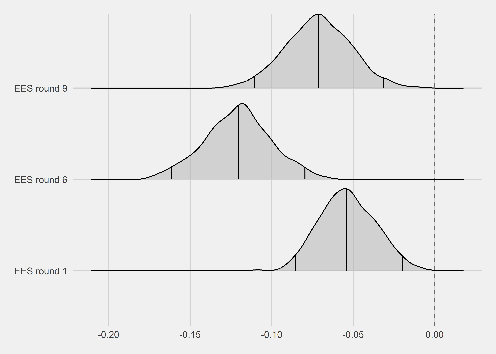
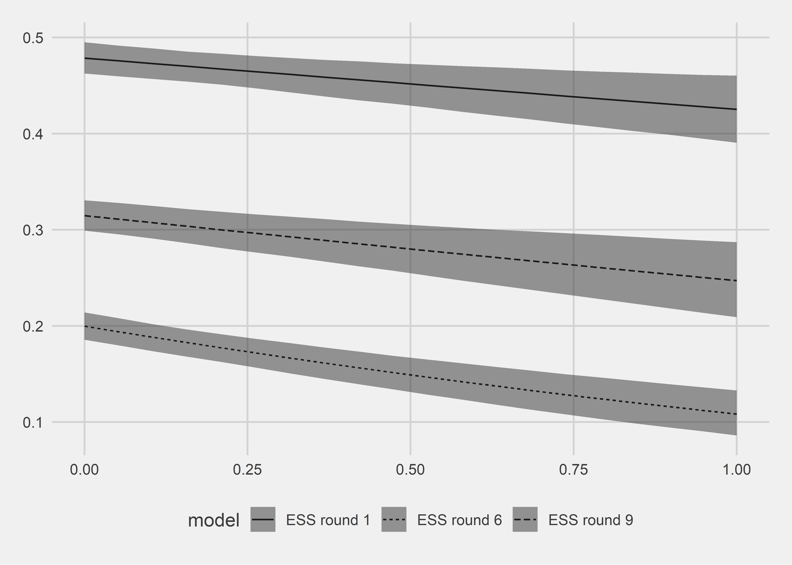
Modelli con party closeness
Nel momento in cui si inserisce la party closeness la situazione diventa ancora più difficile.2 Questa variabile si mangia il coefficiente di immigration nel 2001 e 2018. Nel 2013 il coefficiente regge - e anzi, diventa più rilevante rispetto al modello senza party closeness. Ma insomma, non ci aiuta ad andare nella direzione che volevamo.
Quel che ci dice questo controllo è che nel 2013 c’è stata una porzione non indifferente di non identificati che hanno votato a destra guidati dai loro atteggiamenti sull’immigrazione. Secondo me, ma la butto lì, questi erano comunque elettori di destra che dopo il 2011 non si son più dichiarati nelle survey “vicini a” e per questo compare questa associazione indipendente rispetto alla party closeness.
Ho pure provato a fare un’interazione immigration-party closeness, per vedere se nel tempo gli atteggiamenti sull’immigrazione sono diventati più importanti per coloro che si identificano con partiti del cdx. Non esce fuori praticamente nulla in questa direzion - vedete le predicted probabilities nel terzo pannello.3
Picking joint bandwidth of 0.00346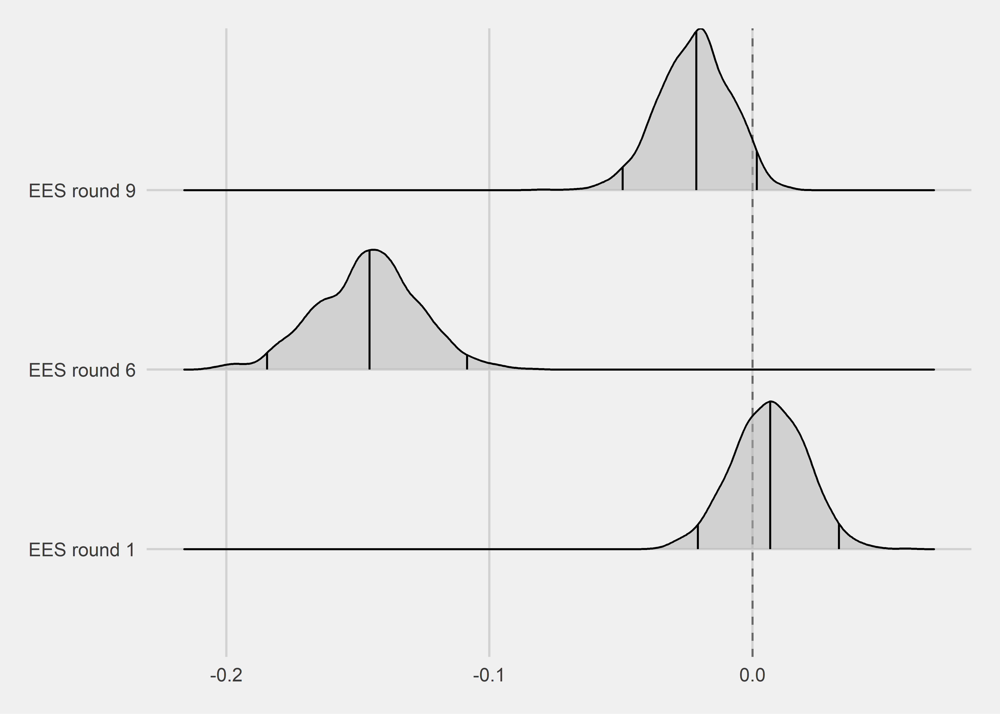
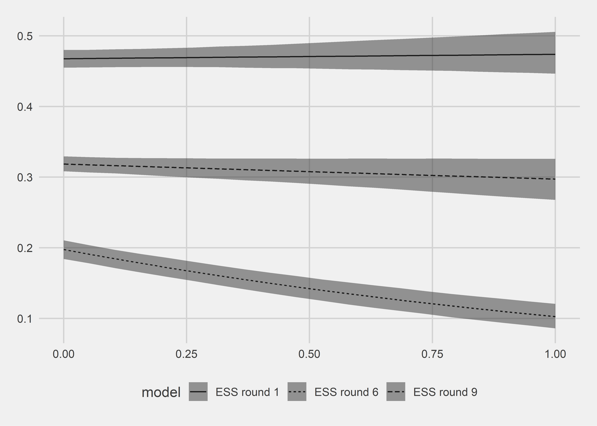
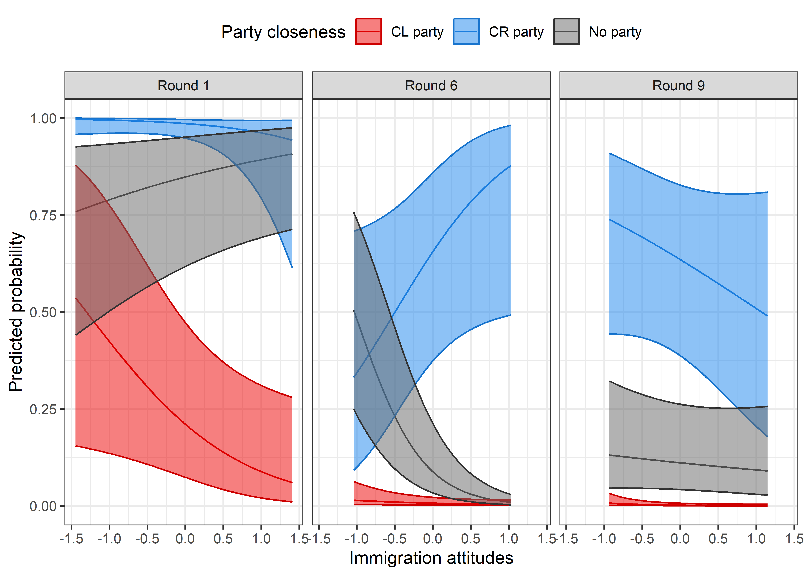
Long story short
Francamente, guardando solo questi dati, non spingerei il discorso immigrazione. Nessuna analisi va nella direzione sperata e non penso che fare del p-hacking possa cambiare molto la situa.
Altre analisi alla ricerca di altre forme di radicalizzazione/estremizzazione
Ho provato prue a vedere se per caso gli elettori del cdx nei vari anni sono diventati più “estremi”/“radicali” su altri fronti. Per ora mi sono fermato al destra-sinistra e alla partysanship.
Per quanto riguarda la prima, la correlazione diventa più precisa nel round 9, rispetto a un correlazione con molto più errore nei round precedenti, in particolare nel 6. Però la magnitudine è molto simile quindi… boh. Non saprei quanto ci spenderei del tempo sopra nel tentativo di spingere la tesi della radicalizzazione.4
Idem con kartoffeln per party closeness. In questo caso ci sono pattern simpatici - e.g., la minor diponibilità nel tempo dei non-identificati a non votare per il cdx, per non parlare poi di coloro che si identificano con partiti di centro-sinistra. Ma questi pattern non vanno nella direzione di una radicalizzazione dell’elettorato - anche se con la party closeness secondo me non si può proprio misurare.
L’ultimo tentativo che ho fatto è stato interagire destra-sinistra e la party closeness. E anche qui, io non vedo segnali di radicalizzazione. Ma non mi pare esca nulla di interessante - guardatevi le predicted probabilities5.
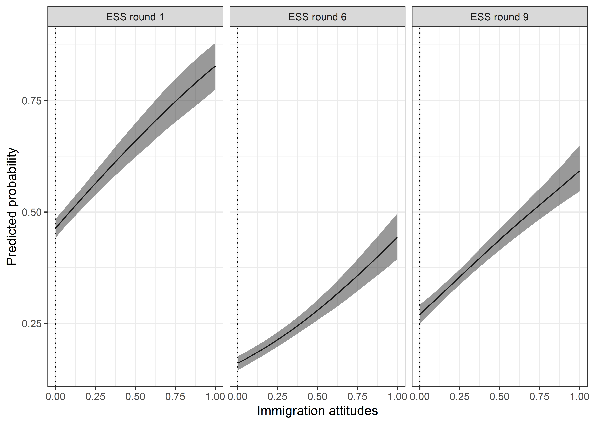
Picking joint bandwidth of 0.00264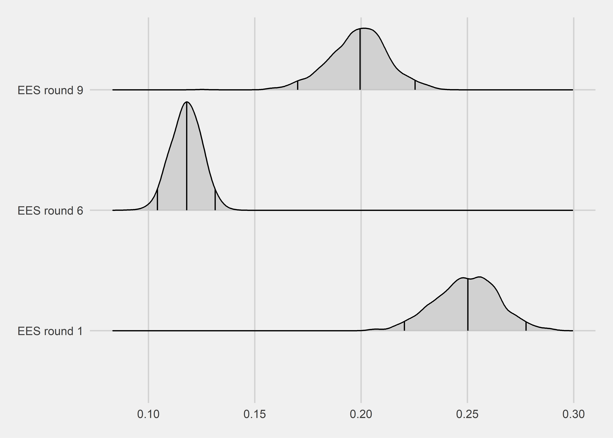
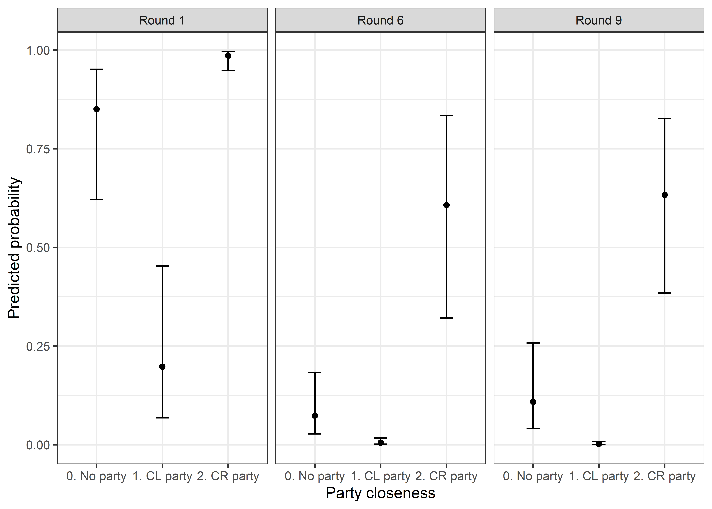
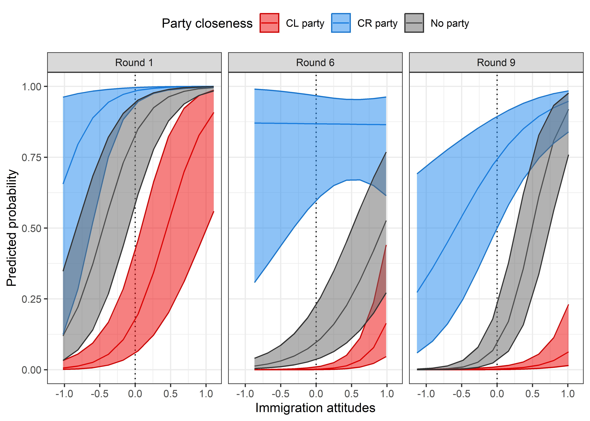
Tavole di regressione
Modelli senza party closeness
| CR vote (no abstention) | |||
| cdx_vc | |||
| (1) | (2) | (3) | |
| Imm. scale | -0.479*** | -1.167*** | -0.628*** |
| (0.159) | (0.175) | (0.167) | |
| Trust EP | -0.856*** | -0.037 | 0.137 |
| (0.175) | (0.162) | (0.146) | |
| LR | 5.017*** | 3.394*** | 4.389*** |
| (0.241) | (0.191) | (0.214) | |
| Religiosity | 0.091 | 1.143*** | -0.044 |
| (0.159) | (0.205) | (0.150) | |
| Income: Coping (Ref: Satisfied) | -0.124 | 0.185 | -0.133 |
| (0.159) | (0.185) | (0.167) | |
| Income: Struggling (Ref: Satisfied) | 0.593** | -0.598** | -0.722*** |
| (0.239) | (0.238) | (0.217) | |
| Employee (Ref: Unempl.) | 0.946*** | 0.752** | -0.064 |
| (0.309) | (0.344) | (0.279) | |
| Self-Empl. (Ref: Unempl.) | 0.588** | 0.577* | -0.023 |
| (0.297) | (0.327) | (0.251) | |
| Family bus. (Ref: Unempl.) | 1.560*** | 1.141*** | -0.125 |
| (0.324) | (0.373) | (0.292) | |
| Edu: HS | -0.230 | 0.393** | -0.274 |
| (0.162) | (0.183) | (0.167) | |
| Edu: Uni | -0.258 | 0.168 | 0.019 |
| (0.252) | (0.282) | (0.233) | |
| Age | -1.754** | 2.407*** | 2.108** |
| (0.848) | (0.923) | (0.989) | |
| Age (sq.) | 1.616* | -1.671* | -1.182 |
| (0.876) | (0.905) | (1.025) | |
| Suburb (Ref: Big city) | -1.235*** | -1.036*** | 0.068 |
| (0.459) | (0.371) | (0.352) | |
| Town/Small city (Ref: Big city) | -0.692** | -0.371 | 0.130 |
| (0.342) | (0.261) | (0.226) | |
| Country Village (Ref: Big city) | -1.788*** | -0.385 | 0.341 |
| (0.353) | (0.242) | (0.224) | |
| Countryside (Ref: Big city) | -1.037** | 0.597 | 0.735* |
| (0.464) | (0.386) | (0.375) | |
| Female (Ref: Male) | -0.105 | -1.150*** | 0.192 |
| (0.151) | (0.169) | (0.144) | |
| Constant | 0.214 | -2.131*** | -1.464*** |
| (0.480) | (0.421) | (0.350) | |
| Observations | 503 | 417 | 1,093 |
| Log Likelihood | -682.827 | -652.379 | -742.574 |
| Akaike Inf. Crit. | 1,403.655 | 1,342.758 | 1,523.148 |
| Note: | p<0.1; p<0.05; p<0.01 | ||
| CR vote (no abstention) | |||
| cdx_vc_abs | |||
| (1) | (2) | (3) | |
| Imm. scale | -0.230* | -0.848*** | -0.497*** |
| (0.131) | (0.152) | (0.148) | |
| Trust EP | -0.667*** | 0.072 | 0.361*** |
| (0.145) | (0.147) | (0.131) | |
| LR | 4.248*** | 2.965*** | 3.848*** |
| (0.189) | (0.162) | (0.181) | |
| Religiosity | 0.273** | 0.852*** | 0.087 |
| (0.135) | (0.172) | (0.134) | |
| Income: Coping (Ref: Satisfied) | -0.069 | 0.025 | -0.285* |
| (0.138) | (0.171) | (0.149) | |
| Income: Struggling (Ref: Satisfied) | 0.415** | -0.953*** | -0.910*** |
| (0.203) | (0.216) | (0.192) | |
| Employee (Ref: Unempl.) | 0.259 | 1.219*** | 0.010 |
| (0.263) | (0.308) | (0.242) | |
| Self-Empl. (Ref: Unempl.) | 0.136 | 1.196*** | -0.002 |
| (0.259) | (0.291) | (0.224) | |
| Family bus. (Ref: Unempl.) | 1.306*** | 1.362*** | -0.050 |
| (0.286) | (0.321) | (0.260) | |
| Edu: HS | 0.125 | 0.330** | -0.054 |
| (0.138) | (0.163) | (0.148) | |
| Edu: Uni | -0.280 | 0.185 | 0.196 |
| (0.229) | (0.254) | (0.213) | |
| Age | 0.455 | 4.386*** | 3.234*** |
| (0.668) | (0.818) | (0.822) | |
| Age (sq.) | -0.240 | -3.400*** | -2.555*** |
| (0.696) | (0.789) | (0.837) | |
| Suburb (Ref: Big city) | -1.397*** | -0.870*** | -0.203 |
| (0.352) | (0.326) | (0.311) | |
| Town/Small city (Ref: Big city) | -0.539** | -0.534** | 0.011 |
| (0.267) | (0.235) | (0.204) | |
| Country Village (Ref: Big city) | -1.321*** | -0.508** | 0.171 |
| (0.279) | (0.217) | (0.201) | |
| Countryside (Ref: Big city) | -1.039*** | 0.327 | 0.357 |
| (0.388) | (0.335) | (0.323) | |
| Female (Ref: Male) | -0.179 | -0.833*** | 0.022 |
| (0.131) | (0.143) | (0.126) | |
| Constant | -0.069 | -2.748*** | -1.580*** |
| (0.394) | (0.378) | (0.313) | |
| Observations | 572 | 522 | 1,340 |
| Log Likelihood | -877.452 | -799.872 | -936.153 |
| Akaike Inf. Crit. | 1,792.904 | 1,637.743 | 1,910.306 |
| Note: | p<0.1; p<0.05; p<0.01 | ||
Modelli con party closeness
| CR vote (no abstention) | |||
| cdx_vc | |||
| (1) | (2) | (3) | |
| Imm. scale | 0.091 | -1.757*** | -0.389 |
| (0.187) | (0.211) | (0.238) | |
| Trust EP | -0.869*** | 0.159 | 0.142 |
| (0.207) | (0.187) | (0.208) | |
| Close to CL party (Ref not close) | -3.137*** | -2.747*** | -4.017*** |
| (0.276) | (0.302) | (0.403) | |
| Close to CR party (Ref not close) | 2.501*** | 2.966*** | 2.648*** |
| (0.295) | (0.335) | (0.240) | |
| LR | 3.507*** | 2.557*** | 3.623*** |
| (0.260) | (0.213) | (0.299) | |
| Religiosity | -0.396** | 0.815*** | 0.404* |
| (0.200) | (0.238) | (0.216) | |
| Income: Coping (Ref: Satisfied) | -0.445** | -0.019 | 0.115 |
| (0.204) | (0.218) | (0.242) | |
| Income: Struggling (Ref: Satisfied) | 0.383 | -0.573** | 0.389 |
| (0.290) | (0.262) | (0.313) | |
| Employee (Ref: Unempl.) | 0.880** | 1.256*** | 0.357 |
| (0.362) | (0.397) | (0.379) | |
| Self-Empl. (Ref: Unempl.) | 0.392 | 0.985*** | 0.554 |
| (0.344) | (0.374) | (0.346) | |
| Family bus. (Ref: Unempl.) | 1.241*** | 1.992*** | 0.320 |
| (0.383) | (0.439) | (0.411) | |
| Edu: HS | -0.615*** | 0.567*** | -0.413* |
| (0.204) | (0.217) | (0.240) | |
| Edu: Uni | -0.442 | 0.639* | 0.607* |
| (0.332) | (0.333) | (0.328) | |
| Age | 0.025 | 0.838 | -0.494 |
| (1.119) | (1.087) | (1.371) | |
| Age (sq.) | -0.249 | 0.300 | 1.203 |
| (1.204) | (1.093) | (1.423) | |
| Suburb (Ref: Big city) | -2.196*** | -1.469*** | 0.126 |
| (0.575) | (0.456) | (0.514) | |
| Town/Small city (Ref: Big city) | -1.373*** | -0.083 | 0.265 |
| (0.468) | (0.350) | (0.350) | |
| Country Village (Ref: Big city) | -2.536*** | -0.534 | 0.128 |
| (0.487) | (0.332) | (0.351) | |
| Countryside (Ref: Big city) | -1.748*** | 0.811 | -0.195 |
| (0.594) | (0.505) | (0.622) | |
| Female (Ref: Male) | -0.090 | -0.890*** | 0.141 |
| (0.183) | (0.187) | (0.206) | |
| Constant | 1.620** | -2.377*** | -2.031*** |
| (0.634) | (0.522) | (0.535) | |
| Observations | 503 | 417 | 1,093 |
| Log Likelihood | -480.289 | -495.778 | -401.562 |
| Akaike Inf. Crit. | 1,002.577 | 1,033.556 | 845.123 |
| Note: | p<0.1; p<0.05; p<0.01 | ||
| CR vote (no abstention) | |||
| cdx_vc_abs | |||
| (1) | (2) | (3) | |
| Imm. scale | 0.199 | -1.164*** | -0.116 |
| (0.152) | (0.167) | (0.187) | |
| Trust EP | -0.716*** | 0.364** | 0.448*** |
| (0.162) | (0.160) | (0.167) | |
| Close to CL party (Ref not close) | -2.409*** | -1.986*** | -3.098*** |
| (0.253) | (0.246) | (0.368) | |
| Close to CR party (Ref not close) | 2.521*** | 1.849*** | 2.306*** |
| (0.220) | (0.201) | (0.166) | |
| LR | 2.885*** | 2.381*** | 2.850*** |
| (0.200) | (0.181) | (0.220) | |
| Religiosity | -0.088 | 0.729*** | 0.321* |
| (0.155) | (0.192) | (0.168) | |
| Income: Coping (Ref: Satisfied) | -0.224 | -0.081 | -0.004 |
| (0.163) | (0.189) | (0.189) | |
| Income: Struggling (Ref: Satisfied) | 0.455** | -1.060*** | -0.256 |
| (0.223) | (0.233) | (0.238) | |
| Employee (Ref: Unempl.) | 0.128 | 1.057*** | 0.157 |
| (0.294) | (0.313) | (0.294) | |
| Self-Empl. (Ref: Unempl.) | 0.084 | 0.989*** | 0.241 |
| (0.289) | (0.298) | (0.275) | |
| Family bus. (Ref: Unempl.) | 1.309*** | 1.169*** | 0.220 |
| (0.325) | (0.334) | (0.324) | |
| Edu: HS | -0.091 | 0.305* | 0.020 |
| (0.164) | (0.179) | (0.186) | |
| Edu: Uni | -0.356 | 0.395 | 0.774*** |
| (0.281) | (0.284) | (0.268) | |
| Age | 1.516** | 4.880*** | 2.227** |
| (0.750) | (0.879) | (0.983) | |
| Age (sq.) | -1.270 | -3.755*** | -1.757* |
| (0.787) | (0.856) | (0.999) | |
| Suburb (Ref: Big city) | -1.381*** | -0.723* | -0.476 |
| (0.395) | (0.372) | (0.399) | |
| Town/Small city (Ref: Big city) | -0.420 | -0.172 | 0.096 |
| (0.316) | (0.287) | (0.266) | |
| Country Village (Ref: Big city) | -1.186*** | -0.535** | 0.041 |
| (0.333) | (0.272) | (0.262) | |
| Countryside (Ref: Big city) | -0.848* | 0.465 | -0.393 |
| (0.451) | (0.409) | (0.418) | |
| Female (Ref: Male) | -0.151 | -0.759*** | -0.026 |
| (0.150) | (0.157) | (0.158) | |
| Constant | 0.013 | -2.457*** | -2.171*** |
| (0.460) | (0.423) | (0.413) | |
| Observations | 572 | 522 | 1,340 |
| Log Likelihood | -681.768 | -678.034 | -633.125 |
| Akaike Inf. Crit. | 1,405.535 | 1,398.067 | 1,308.249 |
| Note: | p<0.1; p<0.05; p<0.01 | ||
Modelli con immigration**party closeness*
| CR vote (no abstention) | |||
| cdx_vc | |||
| (1) | (2) | (3) | |
| Imm. scale | 0.399* | -2.260*** | -0.201 |
| (0.213) | (0.248) | (0.284) | |
| Trust EP | -0.878*** | 0.201 | 0.143 |
| (0.209) | (0.188) | (0.208) | |
| Close to CL party (Ref not close) | -3.041*** | -2.627*** | -4.261*** |
| (0.278) | (0.297) | (0.477) | |
| Close to CR party (Ref not close) | 2.532*** | 2.977*** | 2.634*** |
| (0.303) | (0.326) | (0.244) | |
| LR | 3.545*** | 2.727*** | 3.636*** |
| (0.263) | (0.225) | (0.300) | |
| Religiosity | -0.420** | 0.845*** | 0.425** |
| (0.202) | (0.239) | (0.216) | |
| Income: Coping (Ref: Satisfied) | -0.400* | -0.040 | 0.099 |
| (0.205) | (0.223) | (0.244) | |
| Income: Struggling (Ref: Satisfied) | 0.351 | -0.659** | 0.379 |
| (0.289) | (0.270) | (0.313) | |
| Employee (Ref: Unempl.) | 1.000*** | 1.196*** | 0.347 |
| (0.366) | (0.399) | (0.379) | |
| Self-Empl. (Ref: Unempl.) | 0.378 | 0.980*** | 0.551 |
| (0.343) | (0.370) | (0.346) | |
| Family bus. (Ref: Unempl.) | 1.350*** | 2.006*** | 0.312 |
| (0.386) | (0.436) | (0.410) | |
| Edu: HS | -0.670*** | 0.601*** | -0.434* |
| (0.208) | (0.218) | (0.242) | |
| Edu: Uni | -0.368 | 0.708** | 0.569* |
| (0.334) | (0.341) | (0.331) | |
| Age | 0.141 | 0.164 | -0.438 |
| (1.171) | (1.118) | (1.367) | |
| Age (sq.) | -0.467 | 1.115 | 1.140 |
| (1.265) | (1.140) | (1.418) | |
| Suburb (Ref: Big city) | -2.280*** | -1.977*** | 0.120 |
| (0.580) | (0.478) | (0.518) | |
| Town/Small city (Ref: Big city) | -1.453*** | -0.171 | 0.255 |
| (0.472) | (0.349) | (0.351) | |
| Country Village (Ref: Big city) | -2.612*** | -0.606* | 0.135 |
| (0.489) | (0.328) | (0.353) | |
| Countryside (Ref: Big city) | -1.850*** | 0.801 | -0.220 |
| (0.601) | (0.513) | (0.625) | |
| Female (Ref: Male) | -0.039 | -0.931*** | 0.156 |
| (0.185) | (0.190) | (0.207) | |
| Imm * Close to CL | -1.413*** | 1.550*** | -1.268 |
| (0.530) | (0.541) | (0.799) | |
| Imm * Close to CR | -1.427* | 3.552*** | -0.318 |
| (0.777) | (0.728) | (0.524) | |
| Constant | 1.601** | -2.307*** | -2.014*** |
| (0.636) | (0.520) | (0.534) | |
| Observations | 503 | 417 | 1,093 |
| Log Likelihood | -475.034 | -482.879 | -399.902 |
| Akaike Inf. Crit. | 996.068 | 1,011.758 | 845.805 |
| Note: | p<0.1; p<0.05; p<0.01 | ||
| CR vote (no abstention) | |||
| cdx_vc_abs | |||
| (1) | (2) | (3) | |
| Imm. scale | 0.456*** | -1.656*** | -0.316 |
| (0.174) | (0.201) | (0.240) | |
| Trust EP | -0.729*** | 0.464*** | 0.446*** |
| (0.164) | (0.162) | (0.167) | |
| Close to CL party (Ref not close) | -2.308*** | -1.953*** | -3.358*** |
| (0.254) | (0.261) | (0.445) | |
| Close to CR party (Ref not close) | 2.465*** | 1.913*** | 2.442*** |
| (0.220) | (0.197) | (0.179) | |
| LR | 2.928*** | 2.510*** | 2.840*** |
| (0.202) | (0.188) | (0.221) | |
| Religiosity | -0.098 | 0.706*** | 0.331** |
| (0.155) | (0.193) | (0.168) | |
| Income: Coping (Ref: Satisfied) | -0.212 | -0.100 | 0.032 |
| (0.164) | (0.194) | (0.191) | |
| Income: Struggling (Ref: Satisfied) | 0.409* | -1.127*** | -0.247 |
| (0.223) | (0.237) | (0.239) | |
| Employee (Ref: Unempl.) | 0.160 | 0.990*** | 0.181 |
| (0.296) | (0.315) | (0.294) | |
| Self-Empl. (Ref: Unempl.) | 0.085 | 0.991*** | 0.268 |
| (0.288) | (0.295) | (0.276) | |
| Family bus. (Ref: Unempl.) | 1.375*** | 1.067*** | 0.264 |
| (0.327) | (0.334) | (0.324) | |
| Edu: HS | -0.090 | 0.383** | 0.037 |
| (0.165) | (0.179) | (0.187) | |
| Edu: Uni | -0.271 | 0.497* | 0.861*** |
| (0.284) | (0.288) | (0.276) | |
| Age | 1.623** | 5.081*** | 2.299** |
| (0.768) | (0.903) | (0.983) | |
| Age (sq.) | -1.405* | -3.898*** | -1.813* |
| (0.804) | (0.882) | (0.998) | |
| Suburb (Ref: Big city) | -1.465*** | -0.989*** | -0.557 |
| (0.395) | (0.381) | (0.403) | |
| Town/Small city (Ref: Big city) | -0.466 | -0.341 | 0.051 |
| (0.312) | (0.292) | (0.267) | |
| Country Village (Ref: Big city) | -1.246*** | -0.656** | -0.023 |
| (0.330) | (0.274) | (0.264) | |
| Countryside (Ref: Big city) | -0.906** | 0.409 | -0.385 |
| (0.455) | (0.411) | (0.417) | |
| Female (Ref: Male) | -0.125 | -0.692*** | -0.011 |
| (0.151) | (0.160) | (0.159) | |
| Imm * Close to CL | -1.447*** | 0.495 | -1.423* |
| (0.512) | (0.473) | (0.773) | |
| Imm * Close to CR | -0.895** | 2.277*** | 0.731** |
| (0.452) | (0.405) | (0.364) | |
| Constant | 0.025 | -2.432*** | -2.198*** |
| (0.458) | (0.424) | (0.416) | |
| Observations | 572 | 522 | 1,340 |
| Log Likelihood | -675.669 | -662.894 | -628.250 |
| Akaike Inf. Crit. | 1,397.337 | 1,371.788 | 1,302.500 |
| Note: | p<0.1; p<0.05; p<0.01 | ||
Modelli con destra-sinistra**party closeness*
| CR vote (no abstention) | |||
| cdx_vc | |||
| (1) | (2) | (3) | |
| Imm. scale | 0.091 | -1.725*** | -0.308 |
| (0.187) | (0.215) | (0.243) | |
| Trust EP | -0.871*** | 0.111 | 0.054 |
| (0.208) | (0.191) | (0.213) | |
| Close to CL party (Ref not close) | -3.141*** | -4.023*** | -3.715*** |
| (0.278) | (0.687) | (0.535) | |
| Close to CR party (Ref not close) | 2.524*** | 4.131*** | 3.402*** |
| (0.351) | (0.597) | (0.317) | |
| LR | 3.525*** | 2.377*** | 4.722*** |
| (0.293) | (0.239) | (0.452) | |
| Religiosity | -0.400** | 0.773*** | 0.438** |
| (0.203) | (0.242) | (0.223) | |
| Income: Coping (Ref: Satisfied) | -0.446** | -0.080 | 0.175 |
| (0.205) | (0.219) | (0.245) | |
| Income: Struggling (Ref: Satisfied) | 0.384 | -0.633** | 0.493 |
| (0.291) | (0.261) | (0.323) | |
| Employee (Ref: Unempl.) | 0.881** | 1.217*** | 0.299 |
| (0.363) | (0.392) | (0.390) | |
| Self-Empl. (Ref: Unempl.) | 0.390 | 0.950** | 0.620* |
| (0.346) | (0.370) | (0.358) | |
| Family bus. (Ref: Unempl.) | 1.240*** | 1.953*** | 0.437 |
| (0.384) | (0.439) | (0.421) | |
| Edu: HS | -0.616*** | 0.484** | -0.397 |
| (0.204) | (0.217) | (0.246) | |
| Edu: Uni | -0.442 | 0.606* | 0.733** |
| (0.332) | (0.332) | (0.343) | |
| Age | 0.052 | 0.987 | -0.703 |
| (1.137) | (1.103) | (1.414) | |
| Age (sq.) | -0.281 | 0.043 | 1.564 |
| (1.227) | (1.114) | (1.477) | |
| Suburb (Ref: Big city) | -2.193*** | -1.482*** | 0.156 |
| (0.576) | (0.454) | (0.526) | |
| Town/Small city (Ref: Big city) | -1.368*** | -0.213 | 0.249 |
| (0.471) | (0.352) | (0.357) | |
| Country Village (Ref: Big city) | -2.531*** | -0.545* | 0.102 |
| (0.488) | (0.329) | (0.355) | |
| Countryside (Ref: Big city) | -1.742*** | 0.800 | -0.110 |
| (0.596) | (0.505) | (0.624) | |
| Female (Ref: Male) | -0.091 | -0.867*** | 0.185 |
| (0.184) | (0.187) | (0.213) | |
| LR * Close to CL | -0.068 | 2.312*** | -1.401 |
| (0.735) | (0.842) | (0.919) | |
| LR * Close to CR | -0.119 | -2.404*** | -2.913*** |
| (0.941) | (0.921) | (0.680) | |
| Constant | 1.616** | -2.179*** | -2.291*** |
| (0.638) | (0.520) | (0.556) | |
| Observations | 503 | 417 | 1,093 |
| Log Likelihood | -480.259 | -485.694 | -391.105 |
| Akaike Inf. Crit. | 1,006.519 | 1,017.388 | 828.211 |
| Note: | p<0.1; p<0.05; p<0.01 | ||
| CR vote (no abstention) | |||
| cdx_vc_abs | |||
| (1) | (2) | (3) | |
| Imm. scale | 0.194 | -1.175*** | -0.080 |
| (0.152) | (0.171) | (0.187) | |
| Trust EP | -0.712*** | 0.369** | 0.431*** |
| (0.162) | (0.161) | (0.166) | |
| Close to CL party (Ref not close) | -2.391*** | -3.812*** | -3.239*** |
| (0.257) | (0.744) | (0.531) | |
| Close to CR party (Ref not close) | 2.480*** | 2.885*** | 2.844*** |
| (0.266) | (0.359) | (0.219) | |
| LR | 2.810*** | 2.239*** | 3.518*** |
| (0.220) | (0.209) | (0.314) | |
| Religiosity | -0.076 | 0.691*** | 0.291* |
| (0.155) | (0.198) | (0.169) | |
| Income: Coping (Ref: Satisfied) | -0.227 | -0.187 | 0.005 |
| (0.163) | (0.193) | (0.189) | |
| Income: Struggling (Ref: Satisfied) | 0.437* | -1.130*** | -0.248 |
| (0.224) | (0.232) | (0.239) | |
| Employee (Ref: Unempl.) | 0.129 | 1.088*** | 0.158 |
| (0.294) | (0.314) | (0.293) | |
| Self-Empl. (Ref: Unempl.) | 0.083 | 1.065*** | 0.263 |
| (0.290) | (0.299) | (0.276) | |
| Family bus. (Ref: Unempl.) | 1.307*** | 1.191*** | 0.276 |
| (0.325) | (0.333) | (0.325) | |
| Edu: HS | -0.090 | 0.280 | 0.024 |
| (0.164) | (0.181) | (0.186) | |
| Edu: Uni | -0.357 | 0.442 | 0.847*** |
| (0.281) | (0.285) | (0.275) | |
| Age | 1.480** | 4.875*** | 2.314** |
| (0.754) | (0.873) | (0.982) | |
| Age (sq.) | -1.230 | -3.798*** | -1.847* |
| (0.792) | (0.849) | (0.999) | |
| Suburb (Ref: Big city) | -1.381*** | -0.812** | -0.458 |
| (0.394) | (0.372) | (0.402) | |
| Town/Small city (Ref: Big city) | -0.434 | -0.481 | 0.066 |
| (0.316) | (0.294) | (0.269) | |
| Country Village (Ref: Big city) | -1.195*** | -0.615** | 0.009 |
| (0.334) | (0.270) | (0.264) | |
| Countryside (Ref: Big city) | -0.861* | 0.477 | -0.366 |
| (0.451) | (0.403) | (0.413) | |
| Female (Ref: Male) | -0.150 | -0.703*** | 0.001 |
| (0.150) | (0.157) | (0.159) | |
| LR * Close to CL | 0.550 | 3.005*** | -0.005 |
| (0.682) | (0.867) | (0.853) | |
| LR * Close to CR | 0.199 | -1.814*** | -1.737*** |
| (0.674) | (0.558) | (0.447) | |
| Constant | 0.034 | -2.280*** | -2.327*** |
| (0.462) | (0.423) | (0.421) | |
| Observations | 572 | 522 | 1,340 |
| Log Likelihood | -681.324 | -659.646 | -625.370 |
| Akaike Inf. Crit. | 1,408.647 | 1,365.292 | 1,296.740 |
| Note: | p<0.1; p<0.05; p<0.01 | ||
Descrittive
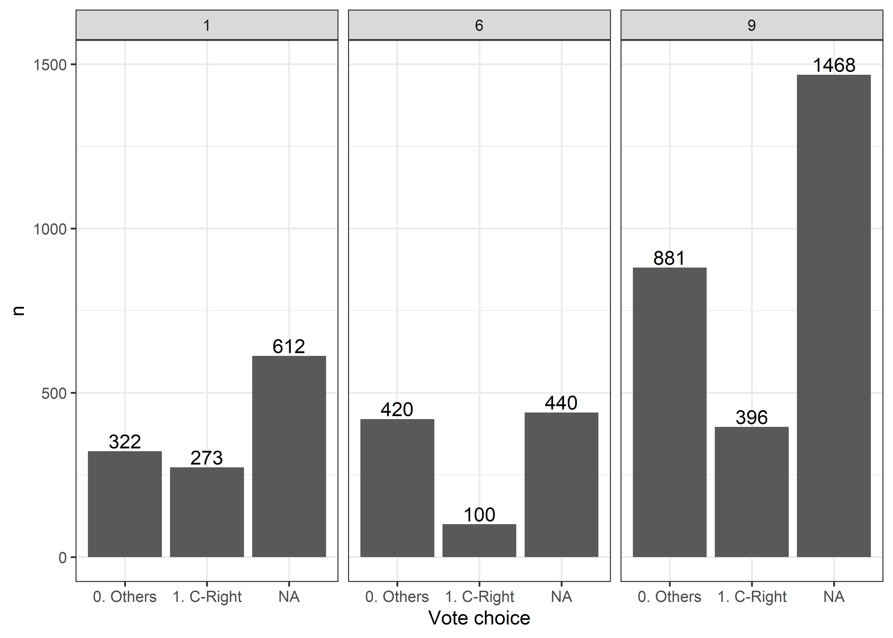
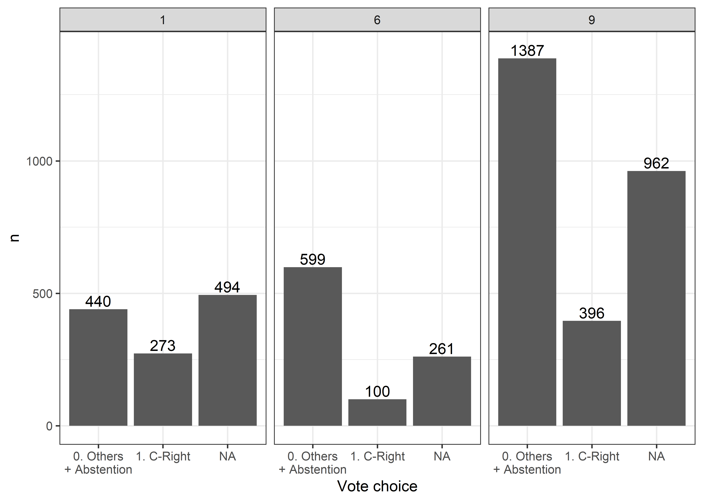
Appendice: Tutto’rcodice
Footnotes
Ho provato anche senza ’sti pesi, ma in realtà diminuiscono di un botto gli standard error se paragonati ai coefficienti delle regressioni senza pesi.↩︎
Codificata: non identificati (0), identificati csx (1), e identificati cdx (2).↩︎
Ignorate gli intervalli di confidenza, che sono molto più larghi rispetto a quelli che vedremmo con il metodo delle simulazioni. Me lo sono evitato perché tanto le correlazioni sono così storte che non valeva la pena sbatterci la testa sopra.↩︎
Anche qua, pe predicted probabilities non sono fatte usando le simulazioni. But, again, secondo me cambia poco - al di là dei margini di errore.↩︎
Ignorando, anche qui, i margini di errore, perché sono più larghi di quelli che verrebbero fuori con le simulazioni.↩︎